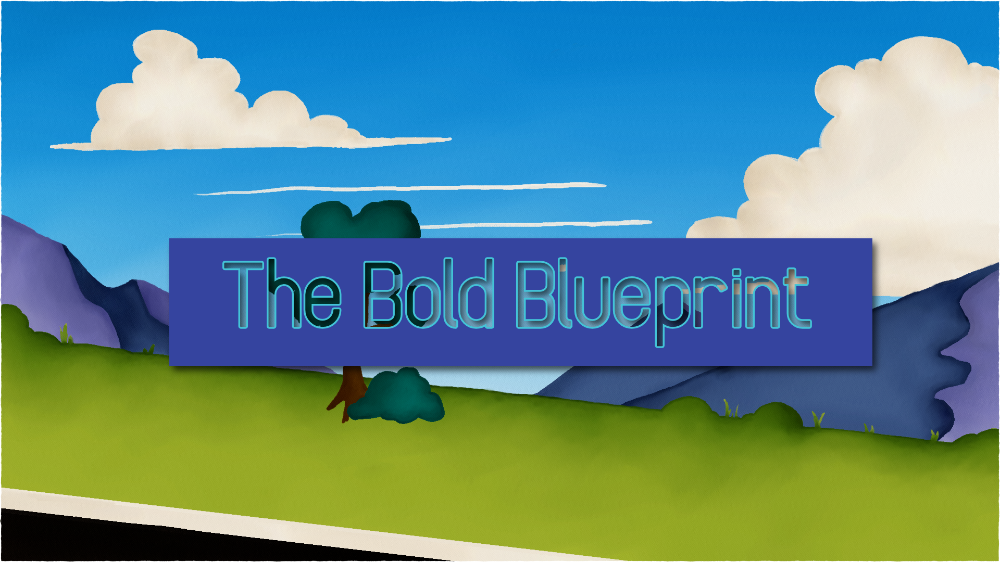

BliniMango
Game Designer | Web Designer
Projects
Echodroid
Producer & Level Designer
Echodroid is a game that was made for the PirateSoftware 14th Game Jam in January 2023. I was the lead project manager and level designer on the team.
Play on Itch.io
Stellar Gato
Solo Developed
Fight through space as Max, the bounty hunting cat, that had stolen green gas called "Smaragd Gem" from the Red Paragons, a rat owning factions in the cosmos.
Play on Itch.io

The Bold Blueprint
Lead Producer & Programmer
A narrative-driven point-and-click game where players, as a new resident in a diverse town, build their dream home with the help of supportive neighbors. The game explores themes of identity, community, and pride, with each stage of construction reflecting the player's personality.
Play on Itch.io